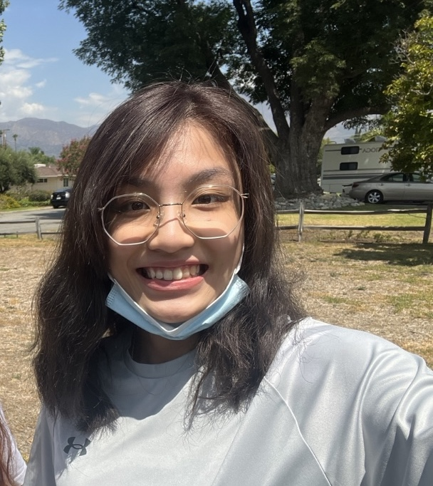

People
Rachel Ryskin is an Assistant Professor in Cognitive & Information Sciences.
Graduate Students
Polyphony Bruna is a PhD student in Cognitive & Information Sciences.
Ellis Cain is a PhD student in Cognitive & Information Sciences.

Joyce Liu is a MS student in Cognitive & Information Sciences.
Tevin Williams is a PhD student in Cognitive & Information Sciences.
Undergraduate Research Assistants
Ma Angela Montiel
Jet Mejia-Bohol
Lab Alumni
Graduate
Richard Ellks, M.S. 2022
Xinzhu Fang
Undergraduate
Nora Chen
Vera Nicolette-Sanchez
Levi Williams